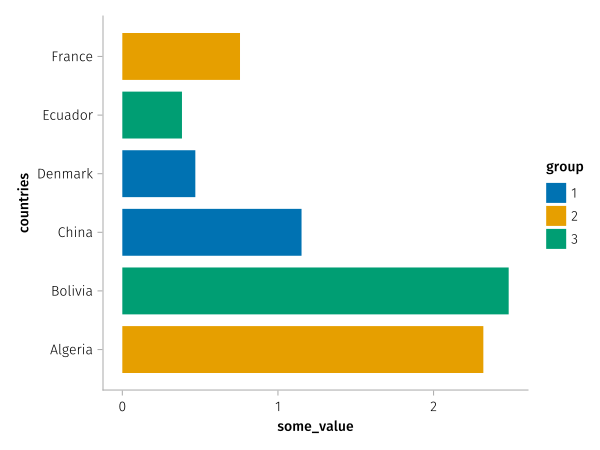
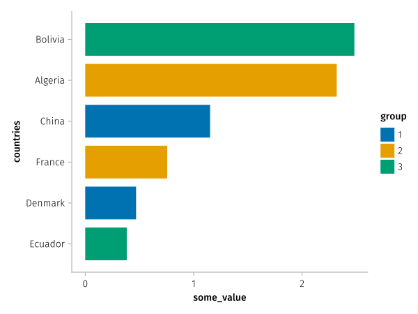
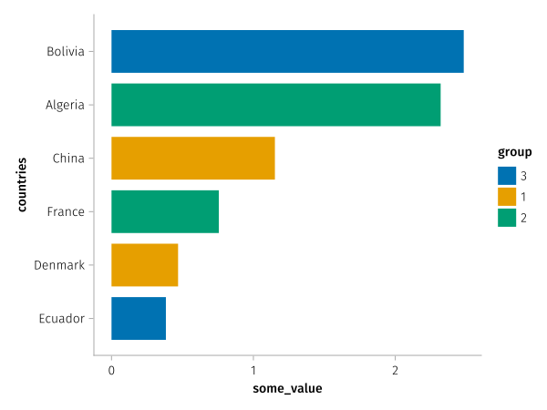

Pre-sorted data

using AlgebraOfGraphics, CairoMakie, DataFramesSometimes we have datasets that have an inherent order we want to preserve. For example, this dataframe has countries sorted by some_value.
countries = ["Algeria", "Bolivia", "China", "Denmark", "Ecuador", "France"]
group = ["2", "3", "1", "1", "3", "2"]
some_value = exp.(sin.(1:6))
df = DataFrame(; countries, group, some_value)
sort!(df, :some_value)
df6×3 DataFrame
| Row | countries | group | some_value |
|---|---|---|---|
| String | String | Float64 | |
| 1 | Ecuador | 3 | 0.383305 |
| 2 | Denmark | 1 | 0.469164 |
| 3 | France | 2 | 0.756226 |
| 4 | China | 1 | 1.15156 |
| 5 | Algeria | 2 | 2.31978 |
| 6 | Bolivia | 3 | 2.48258 |
When we plot this, the categorical variable countries is sorted alphabetically by default:
spec = data(df) *
mapping(:countries, :some_value, color = :group) *
visual(BarPlot, direction = :x)
draw(spec)
We don't want this, because we have purposefully sorted the dataframe to visualize which countries have the highest value. To retain the order, we can use the presorted helper.
spec = data(df) *
mapping(:countries => presorted, :some_value, color = :group) *
visual(BarPlot, direction = :x)
fg = draw(spec)
We can also mark multiple variables as presorted, note how the order in the color legend shifts when we do the same for group:
spec = data(df) *
mapping(:countries => presorted, :some_value, color = :group => presorted) *
visual(BarPlot, direction = :x)
draw(spec)
This page was generated using DemoCards.jl and Literate.jl.